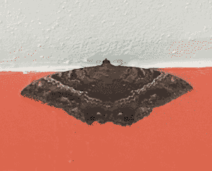
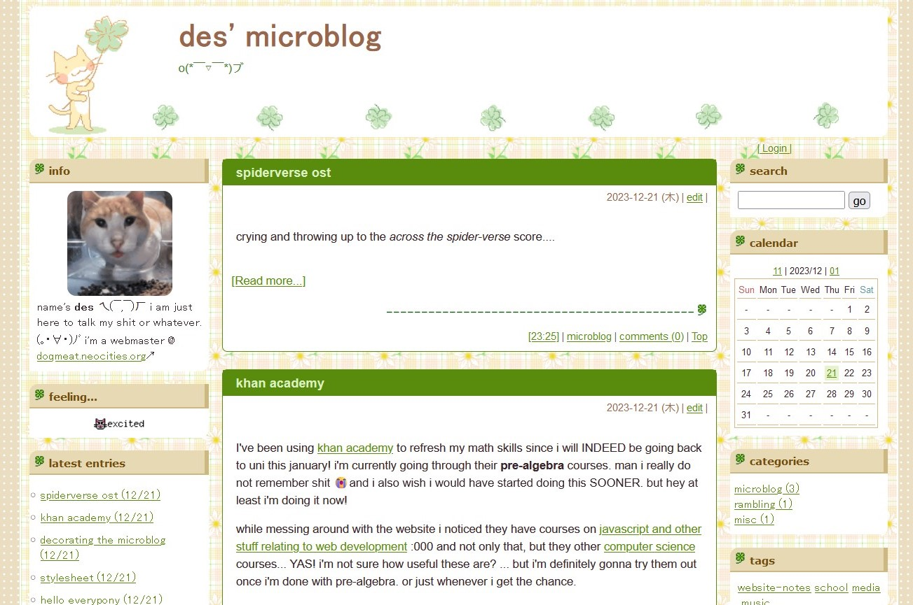
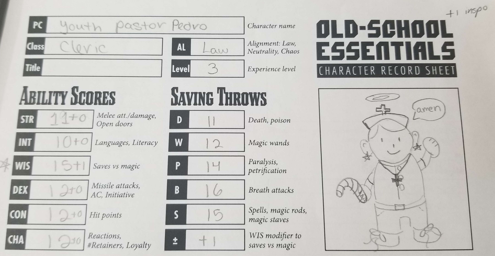

visitor + site news + microblog22.dec.23

saw this guy chillin' in our garage the other day. so cute! i think this is a butterfly?? i'm not sure. *3 google searches later* OHHHHHHH yeah it's a moth. ascalapha odorata, commonly known as the black witch. which makes A LOT of sense because when my grandma saw it she told me it was a bad omen  well i think they're cute!
well i think they're cute!
in other news, i have some site stuff to announce!
i'm currently working on my 2023 music recap! i am hoping to get it out before the 26th because...
i will be going on a trip with my girlfriend! which i am super super excited for  i'll definitely be talking about that in a future log! so expect a week or so of inactivity from the site (a very rare occurrence since i am obsessed with updating this site)
i'll definitely be talking about that in a future log! so expect a week or so of inactivity from the site (a very rare occurrence since i am obsessed with updating this site)
i've also opened a FC2 microblog!

this is a premade template by tora7.ciao.jp but i made some edits to it :3
i've been thinking of opening one for a bit, but i wasn't sure for what exactly i would use it since i have my journal, and blog on my website. when it came to 'microblogging' i mostly used twitter for that. my god what a cesspool has twitter become... anyways, i just simply wanted something i could update easily to talk about whatever, similar to status.cafe but with wayy just more options. and characters to type.
i thought about moving my journal over there because i like that i can search and categorize my posts on fc2 but i don't think i'll ever do that despite the... (fuck. whats the word??? the word that describes something that is easy to use... SAVE ME DICTIONARY.......) CONVENIENCE. one day i'll have enough knowledge to implement tags and search here 
i really love what my site's journal has become and how i've decorated it to make it perfect for me. it's very personal to me and i think some of that would get lost if i moved it to fc2. it's way too charming to give it up like that  i used to write in this journal whenever a thought popped in my head and i had some time to write something. but nowadays i've been curating what i write in here a bit better!
i used to write in this journal whenever a thought popped in my head and i had some time to write something. but nowadays i've been curating what i write in here a bit better!
ANYWAY! the point of all of this is just to make it known that i'm also over @ doqmeat.blog.fc2.com. i'll be away from my beloved computer throughout the trip, but i'll most likely be updating the microblog. feel free to visit me over there if you'd like :)
COLD
uni admission accepted!18.dec.23
content warning: brief discussion of suicidal ideation.
after months of waiting and waiting, the university i applied to study computer science finally responded about the results of my admission.... and well...
 MY ADMISSION GOT ACCEPTED!!!
MY ADMISSION GOT ACCEPTED!!!

i got SO happy when i saw the e-mail as soon as i woke up!!!
the past 5 years for me has been crazy. i am even a little surprised at how i managed to make it out of everything alive. i've been struggling for the LONGEST time on what i want to do. and i have felt so lost and worthless at times. it was very painful.
but over the past 6 months, i've been slowly picking myself up. i still have a long way to go to become the person that i want to be. but me being accepted back again into uni has been a huge step for me!
i'm really going to try my best! i am a tiny bit nervous about going back to school. i've been out of that... setting for the past 3 years, my social skills are not what they used to be, and to complete it all: i am going into a concentration that has a lot of math, something that isn't exactly my strongest suit  but i'm still willing to give it my best. i don't think i have much to lose anyway. either way, my excitement of starting a new chapter in my life definitely gives me a lot of hope that i will somehow succeed
but i'm still willing to give it my best. i don't think i have much to lose anyway. either way, my excitement of starting a new chapter in my life definitely gives me a lot of hope that i will somehow succeed
i never thought i would ever be excited about my future again. i didn't know where i would see myself in 5 years, in a year, in 3 months, or even the next day. every night i was begging for the world to just magically take me away. i didn't want to be here anymore. but i also didn't want to die. and i am happy i didn't.
i am happy to be alive.
if everything goes well i should be starting my studies this coming january! i will not have as much time as i currently have to update my site, though  but that's something i'm willing to work with. nonetheless, i am pretty sure i will always find some free time to work on my website.
but that's something i'm willing to work with. nonetheless, i am pretty sure i will always find some free time to work on my website.
from the bottom of my heart: thank you to everyone who has taken an interest on my site. i have come a long way from when i first opened it up. i have learned a lot of about myself and coding in the past few months. and i hope to keep learning in the future. so thank you! for being here.
crickets and coquies
happy
(more like drinking....) hot chocolate
2nd anniversary
08.dec.23
i recently celebrated my 2nd anniversary with my beloved boyfriend  we ate at this very expensive asian restaurant. it was sooooo good!!!!!
we ate at this very expensive asian restaurant. it was sooooo good!!!!!
here's some sushi we ordered with a side of tostones
i think the translation of that would be fried plantains...? not sure lol
for the main plate i ordered some teriyaki beef (it was so tender!!) with fried rice and vegetables. for dessert i ordered a fried ice cream... which i forgot to take a picture of. but it was really good as well. i've never eaten so much before.
the next day, we went to participate in a d&d club. the dungeon master was hosting a christmas themed d&d game. i was a bit nervous because i've never played a game of d&d but the dm was very chill and it turned out pretty fun though we didn't manage to finish the campaign 

i doodled my character while waiting for others to finish with theirs. my character turned out to be a cleric my rolling my stats and all that so i made them into a 'cool' youth pastor.
about my last journal entry... i am actually writing this log in VS code... despite me complaining last time, i still want to learn how to use this coder! i still prefer brackets i'm pretty sure... but it's nice to have options.
i also DID manage to install a git extension to brackets.io as well and learned how to use it! but at the end of the day i prefer to use github desktop for pushing commits and that sort of thing. which is GREAT because now i have access to my branches on brackets.io :) besties, we are learning so much.
tired from this MIGRAINE i've been having for days
fortnite lego
im hungry so i'm about to make some fries and ramen
learning about github
01.dec.23
OK SO.... i've been doing some stuff behind the scenes so my process of uploading the code to neocities would be wayyyyy smoother going forward!
i had been meaning to figure out how to deploy to neocities via github using miss moss's template! and finally stop updating my website by just copy + pasting code into the neocities built-in code editor.
i had known this was a thing for quite a while but never got around to do it because github marked my account as SPAM for some reason..... i stopped procrastinating contacting github support and they actually got to me pretty fast :) now with my account back to normal i managed to get deploy to neocities up and running!
i was (well still am...) pretty new to github and all of that jazz to it took me a bit to set it up even with the template but despite everything, it was pretty easy! i've uploaded my entire site already and even pushed my december listening log update with it! it really makes things soooooo much easier as someone who would lose track of what i had already uploaded pretty easily.
since i got that done, i've been taking my time exploring github and all the things i can do with it.
i went into youtube and looked up some tutorials! i stumbled upon a video called Git and GitHub for Beginners - Crash Course and i've been learning a bit from that!
for some context: i use brackets.io as my code editor and then used github desktop to push my changes into the repository. through that video, i also found out that i can do that with visual studio code and git.
i downloaded both of those programs to check it out and made a repository on github just to mess around with it. i think it's very nice how you can push changes directly through VSC (as long as you have git installed as well) BUT i have a bit of a problem....
i understand VSC has like Way More compared to brackets but wow.... going through VSC genuinely gave me a bit of headache because there is just SO much stuff in here.
one of my main issues is that i cant find a way on how to switch between folders (or workspaces i guess?) that isn't through file > open folder... and selecting the folder every time i want to work on it.
i tried downloading an extension for it but i couldn't get it working at the end, i couldn't get it to work... so far this is my biggest pet peeve or whatever 
i really like the simplicity of brackets. so i think i will stick to brackets and github desktop in the meantime 
anyway... this whole convo started because of that youtube video. i'm still not even half way through the video btw but i will finish it throughout this week!
i've been so focused into this github thing that i havent touched v3 of the homepage in a bit! but i will get to it soon!
though, i also want to write my 2023 music recap with my top songs of this year... but that will depend on what my brain wants to focus on at that given moment 
my online friends suffering in overwatch comp
tired, i walked 2.2 miles today!
header background from fancyparts.com